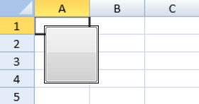
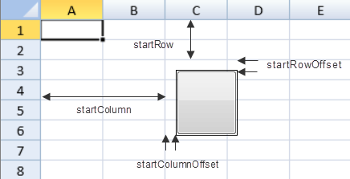

You can create custom floating objects.
You can put an HTML element in a floating object. The following image displays a button element in a floating object.

You can specify whether the floating object is visible or locked (isVisible or isLocked methods). The isLocked method only has an effect if the sheet is protected. You can use the dynamicMove method to specify whether the floating object moves when hiding or showing, resizing, or moving rows or columns. You can specify whether the size of the floating object changes when hiding or showing, resizing, or moving rows or columns with the dynamicSize method.
When the fixedPosition method of a floating object is true, the floating object's position is not changed after scrolling, hiding, showing, resizing, or moving rows or columns. The dynamicMove and dynamicSize methods are disabled if the fixedPosition method is true. If the fixedPosition method is true, the floating object can be moved or resized.
The following methods work as before if the fixedPosition method is true:
You can resize or move floating objects with the mouse. You can also set the width, height, or position of the floating object with the width, height, x, or y method. You can use row and column indexes to specify the position by setting the startColumn and startRow methods. You can specify an offset with the startColumnOffset and startRowOffset methods. You can also set the endColumn, endRow, endColumnOffset, and endRowOffset methods.
The following image displays a custom floating object that uses startColumn, startRow, startColumnOffset, and startRowOffset methods.

You can select floating objects by using the left or right mouse button or you can use the isSelected method. You can use the Tab key or Shift+Tab to navigate between multiple floating objects. You can select multiple floating objects by holding down Ctrl or Shift while clicking the right mouse button.
You can cut, copy, or paste the floating object with standard shortcut keys. You can also use undo and redo actions with floating objects.
This example adds a custom floating object to the sheet.
| JavaScript |
Copy Code
|
|---|---|
var customFloatingObject = new GC.Spread.Sheets.FloatingObjects.FloatingObject("f1", 10, 10, 60, 64); var btn = document.createElement('button'); btn.style.width = "60px"; btn.style.height = "30px"; btn.innerText = "button"; customFloatingObject.content(btn); activeSheet.floatingObjects.add(customFloatingObject); |
|
When setting an HtmlElement as a floating objects content, the HtmlElement will be cloned and lose its attributes due to a greater complex policy for floating objects.
The HtmlElement attributes can be applied after the floating object’s content is loaded using the FloatingObjectLoaded Event. For example, the following code sample adds an ID and event listener to the loaded floating object’s content.
| JavaScript |
Copy Code
|
|---|---|
activeSheet.bind(GC.Spread.Sheets.Events.FloatingObjectLoaded, (_, args) => {
args.element.id = 'some_id';
args.element.addEventListener('click', () => alert('clicking'));
});
|
|